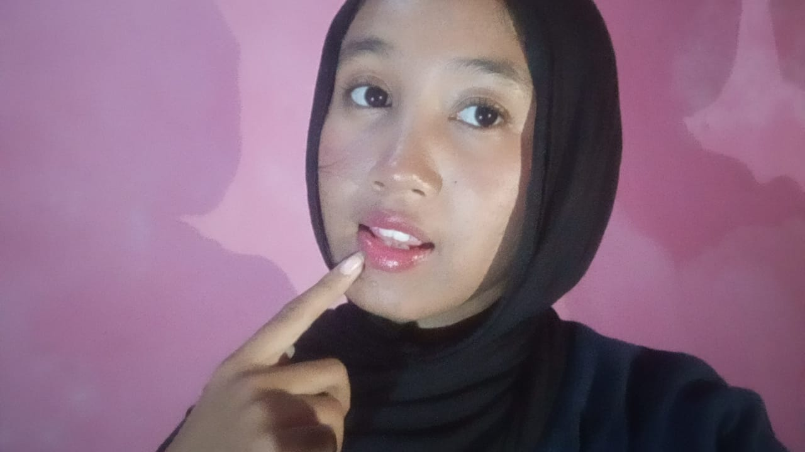
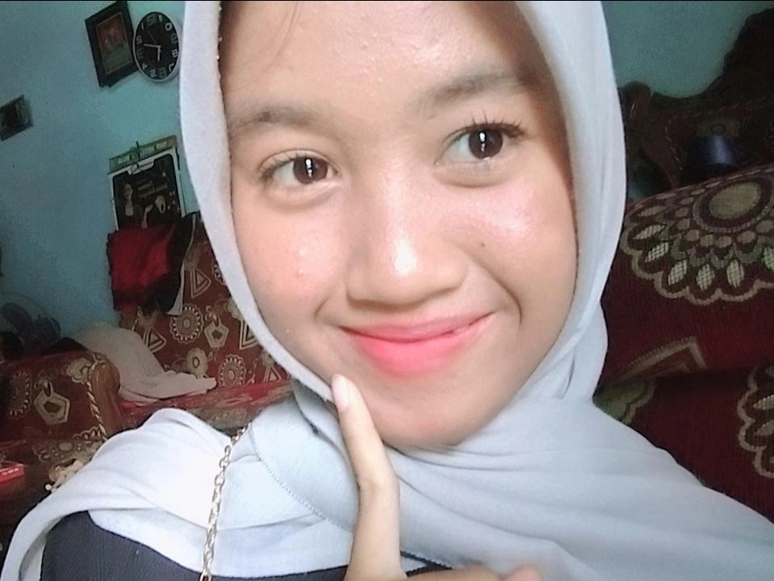
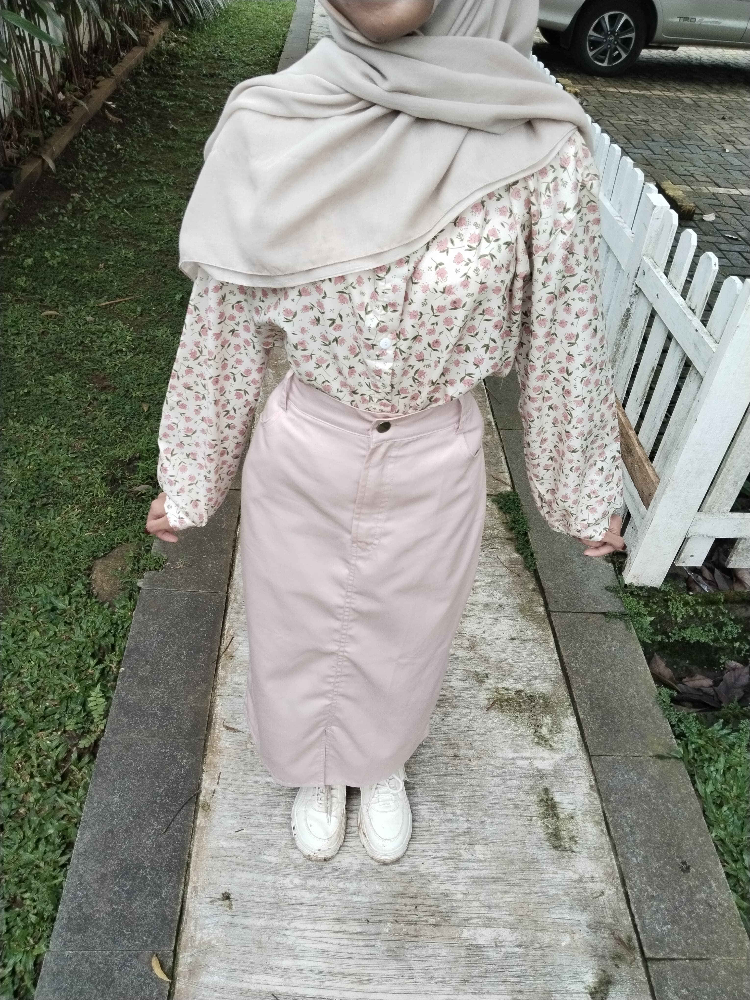
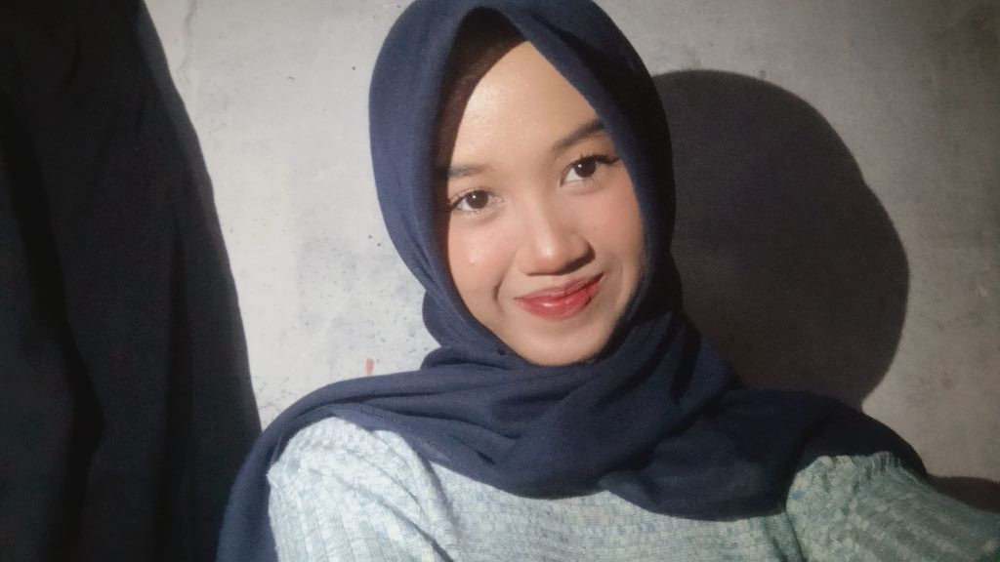
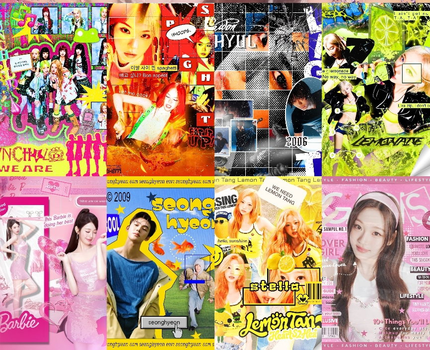
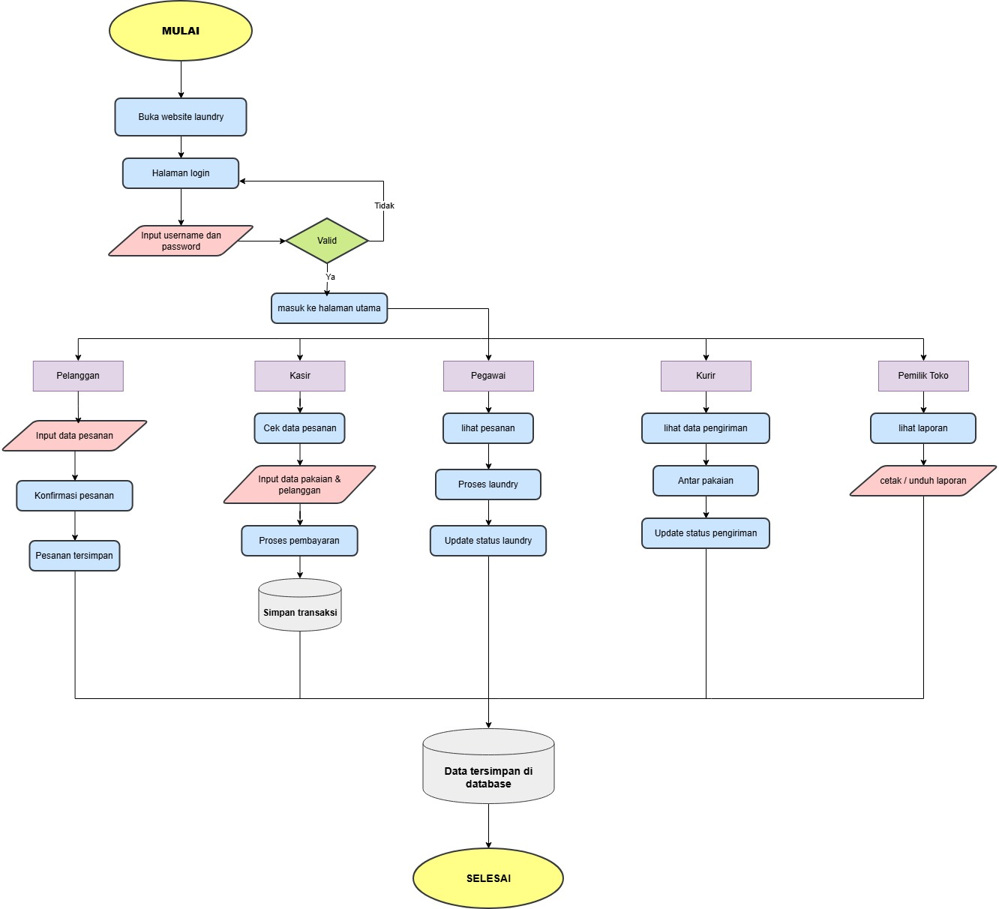
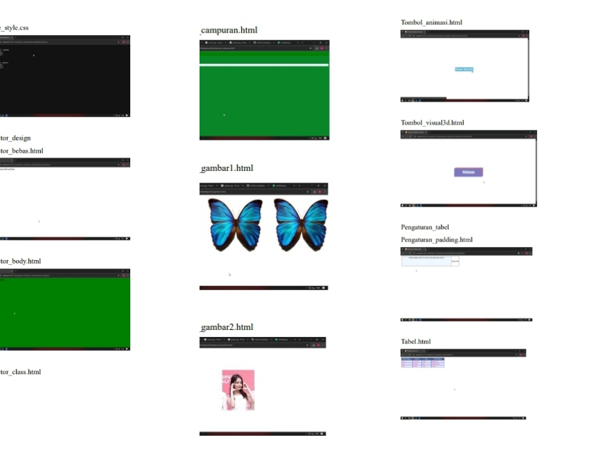
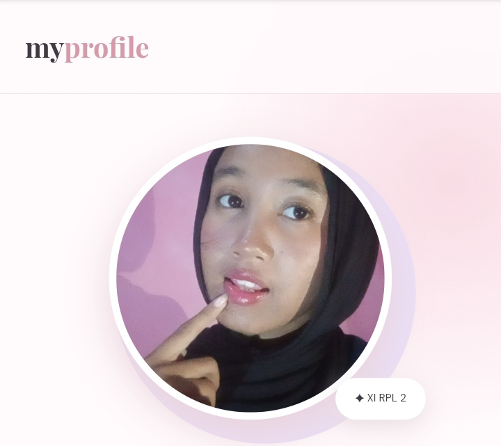

HELLO, I'M
Pelajar XI RPL 2 yang sedang belajar, berkembang, dan mengenal lebih banyak hal di dunia teknologi.
About Me →
01 — PROFILE
Hai! Aku adalah seorang pelajar yang suka mencoba dan mempelajari hal-hal baru. Aku memiliki rasa ingin tahu yang cukup besar dan senang mengeksplorasi hal yang menarik bagiku. Aku juga lebih mudah memahami sesuatu dengan melihat contoh dan langsung mencobanya sendiri. Saat ini aku masih terus belajar, mengembangkan kemampuan, dan mencari pengalaman baru melalui berbagai kegiatan dan hal-hal yang aku kerjakan. Aku percaya kalau setiap proses bisa menjadi kesempatan untuk belajar dan berkembang.
Saya juga memiliki ketertarikan pada desain visual dan senang mencoba membuat berbagai macam desain.
02 — MOMENTS



03 — EDUCATION
SD NEGERI 2 NGABEAN
SMP NEGERI 2 BOJA
SMK NEGERI 3 KENDAL (Rekayasa Perangkat Lunak) — XI RPL 2
04 — EXPERIENCE
Namun saat ini saya sudah tidak mengikuti organisasi dan masih berfokus pada pembelajaran serta pengembangan kemampuan diri.
05 — STRENGTHS
Terbuka untuk mempelajari hal-hal baru dan mengembangkan kemampuan.
Senang mencoba berbagai ide dan konsep terutama dalam membuat desain.
berusaha menyelesaikan tugas yang diberikan.
06 — ACHIEVEMENT
Belum ada prestasi yang ingin saya tampilkan. Saya masih terus belajar dan mengembangkan kemampuan untuk mendapatkan pengalaman baru.
07 — SKILLS
Membuat struktur dasar halaman website dengan menggunakan HTML.
Mengatur tampilan, layout, dan desain sederhana pada website.
Memahami dasar database dan penggunaan perintah SQL.
Membuat desain visual dan poster menggunakan Canva.
Membuat dan mengatur dokumen untuk berbagai kebutuhan tugas.
08 — MY WORK

Desain poster bertema K-Pop yang dibuat menggunakan Canva.

project lain yang pernah dibuat.

Laporan yang dibuat sebagai bagian dari pembelajaran RPL.

Website project profile pribadi yang dibuat menggunakan HTML dan CSS, yang berisi informasi diri, pendidikan, kompetensi, dan portofolio